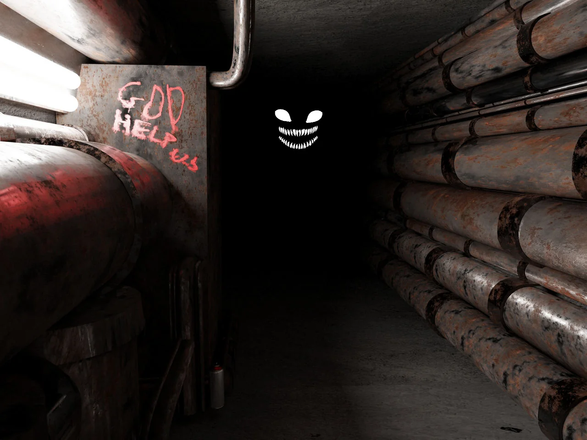

Level 2 — это третий уровень Backrooms, известный как 'Pipe Dreams'. Он представляет собой сеть длинных, тускло освещённых бетонных коридоров технического обслуживания, с паровыми трубами, выстилающими стены и потолки. Уровень тянется бесконечно в обоих направлениях, а температура может достигать 93 °C, что делает его крайне опасным для выживших.
На этом уровне обитают одни из самых опасных сущностей в Backrooms, включая Facelings, Hounds, Smilers и Scratchers. Эти сущности адаптировались к условиям уровня и представляют серьёзную угрозу для выживших.
Пожарные выходы могут привести обратно на Уровень 1 или вперёд на Уровень 3.